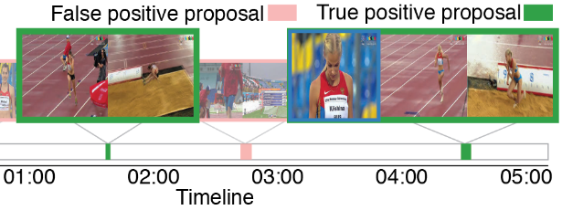
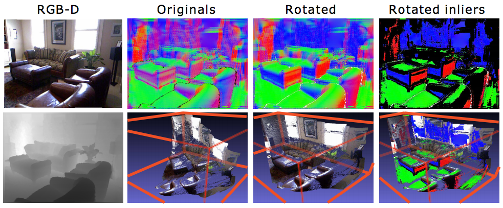
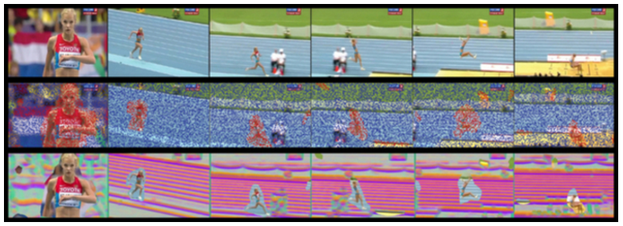
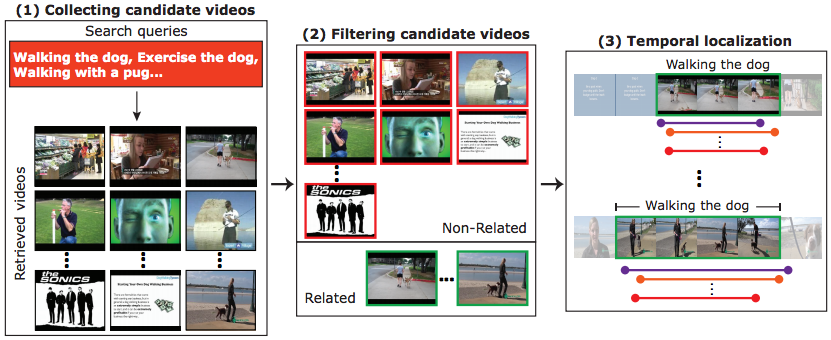

Fabian Caba Heilbron
I am a PhD student at KAUST (Kingdom of Saudi Arabia) advised by Professor Bernard Ghanem. My research interests lie in Computer Vision and Machine Learning. Specifically, I aim to tackle challenges of human activity recognition at large scale. I study efficient ways to harvest, annotate, and understand massive amount of video data depicting human behaviours.
I received my Master degree in Electronics from Universidad del Norte in 2013, under the supervision of Professor Juan Carlos Niebles.
I am best contacted by email:
|
Email: fabiancabaheilbron@gmail.com GChat: fabiancabaheilbron@gmail.com |
Geometric Modeling and Scientific Visualization Center King Abdullah University of Science and Technology Al Khawarizmi Building (Bldg 1). Thuwal, Kingdom of Saudi Arabia |
News
[11-07-2016] One paper accepted to ECCV 2016:
DAPs: Deep Action Proposals for Action Understanding.
Victor Escorcia, Fabian Caba Heilbron, Juan Carlos Niebles, Bernard Ghanem. ECCV, October 2016.
Victor Escorcia, Fabian Caba Heilbron, Juan Carlos Niebles, Bernard Ghanem. ECCV, October 2016.
Publications

Fast Temporal Activity Proposals for Efficient Detection of Human Actions in Untrimmed Videos
Fabian Caba Heilbron, Juan Carlos Niebles, Bernard Ghanem
Las Vegas, CVPR 2016. - [Paper] [Project page] [Code (Github)] [Demo]
Fabian Caba Heilbron, Juan Carlos Niebles, Bernard Ghanem
Las Vegas, CVPR 2016. - [Paper] [Project page] [Code (Github)] [Demo]
ActivityNet: A Large-Scale Video Benchmark for Human Activity Understanding
Fabian Caba Heilbron, Victor Escorcia, Bernard Ghanem, Juan Carlos Niebles
Boston, CVPR 2015. - [Paper] [Project page] [Code (Github)] [Demo]
Fabian Caba Heilbron, Victor Escorcia, Bernard Ghanem, Juan Carlos Niebles
Boston, CVPR 2015. - [Paper] [Project page] [Code (Github)] [Demo]

Robust Manhattan Frame Estimation from a Single RGB-D Image
Bernard Ghanem, Ali Thabet, Juan Carlos Niebles, Fabian Caba Heilbron
Boston, CVPR 2015. - [Paper] [Project page] [Code] [Data]
Bernard Ghanem, Ali Thabet, Juan Carlos Niebles, Fabian Caba Heilbron
Boston, CVPR 2015. - [Paper] [Project page] [Code] [Data]

Camera Motion and Surrounding Scene Appearance as Context for Action Recognition
Fabian Caba Heilbron, Ali Thabet, Juan Carlos Niebles, Bernard Ghanem
Singapore, ACCV 2014. - [Paper] [Project page]
Fabian Caba Heilbron, Ali Thabet, Juan Carlos Niebles, Bernard Ghanem
Singapore, ACCV 2014. - [Paper] [Project page]

Collecting and Annotating Human Activities in Web Videos
Fabian Caba Heilbron, Juan Carlos Niebles
Glasgow, ICMR 2014. - [Paper] [Code (Github)] [Demo]
Fabian Caba Heilbron, Juan Carlos Niebles
Glasgow, ICMR 2014. - [Paper] [Code (Github)] [Demo]
In God we trust. All others must bring data.
— W. Edwards Deming